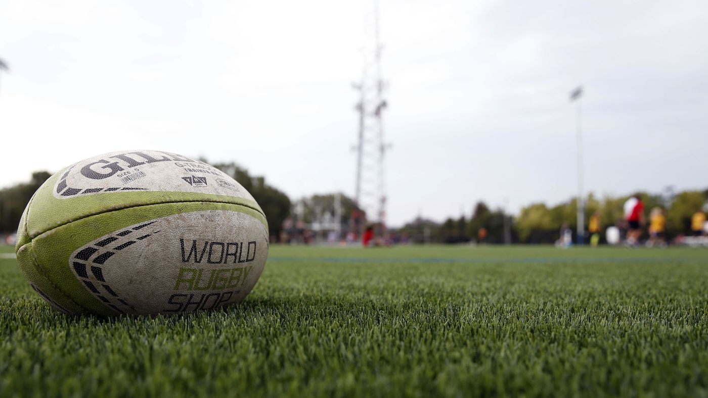

School Background
I am currently a final year student doing Bsc IT at North West University.I have been privelleged enough to go to a diversified and highly talented highschool Hoërskool Transvalia.
Leadership
I was privelleged enough to serve as a class representative(VLR) from 2013 to 2014. I also sevred as a prefect(LOR) in my senior years at Hoërskool Transvalia from 2015 to 2016. I also formed part of the school spirit squad/ dirgente in 2016 for the Interhouse, interHigh and Super 16 athletics events.Interests

I used to play rugby in highschool and the love for the sport never went away. It taught me to be humble, how to be a good team player and to get up after every knock down. That getting pushed back does not mean you going to stay there. Most importantly it taught me that the work you put in gets reflected in the results at the end of the day.
 I love coding challenges as it challenges you to think outside the box. That no matter the subject/ problem you think you can not solve its always best to break it down piece by piece the same way you would eat an elephant.
I love coding challenges as it challenges you to think outside the box. That no matter the subject/ problem you think you can not solve its always best to break it down piece by piece the same way you would eat an elephant.
 Me interest in Data Security grew because of a TV series CIS:NY. It seemed intersting and challenging
Me interest in Data Security grew because of a TV series CIS:NY. It seemed intersting and challenging
My interest grew in the development of Technology in the medical field and recognition software. i fot facinated in the field on how it could be used to better life qualities for disabled and injured people.